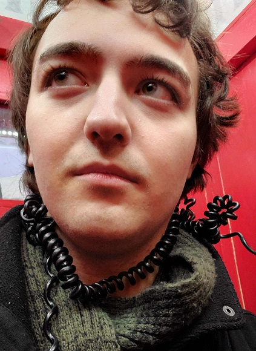

Hi! My name is Jason Ferguson.
I'm big into drawing, programming, and playing piano, in that order. I've been doing two of those off-and-on since I was a wee pup, but I only got to programming in my late teens, starting with Lua about 7 or 8 years ago and moving on to suffering with C++ a few years later. And now I'm in college to eventually land a career full of it!
I'm trying to cultivate a personality outside of those things though, so I'm also obligated to mention that I like birds and dogs quite a lot. Probably fanatic even. But maybe you already picked up on that from my art. They're just good animals, okay? Leave me alone.